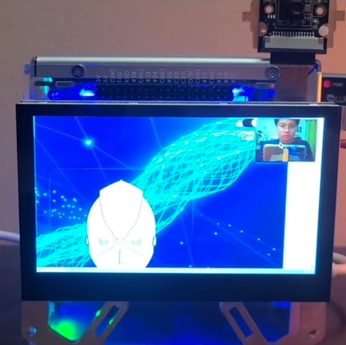

About the Project
Ordinary Systems of a Well Established Language Library is the concept of integrating machine learning models, generative transformers, and APIs providing specific functionalities or information to form one unified application that can handle several tasks that effectively communicate to the user the appropriate response based on their demands.
Similar to Google Home, Alexa, or Siri that gives answers to users upon request. This project involves using the language Python for training a natural language processing model (NLP) and deploying the model using Java with integrated google speech recognition and natural text-to-speech APIs.
The project is able to respond to requests asking the time, date, weather, current events, and more! In addition, the command "what is the weather" or similar sentences gives the current weather in any location that is specificed by the user. The command "play music" will run a music player that will play music, and the command "search on wikipedia" will give information from wikipedia any topics that the user is interested in. Lastly, the command "calculate" will calculate a math expression for the user.
The system is then integrated into the Raspberry Pi 5 for deployment.
